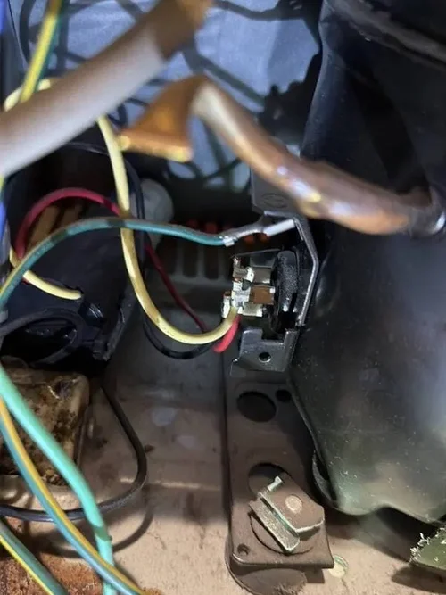

LG Refrigerator Repair: How Preventive Maintenance Can Extend Refrigerator Lifespan
Many homeowners wait until a refrigerator completely stops cooling before scheduling professional repair service. However, modern refrigerators often develop smaller performance problems long before major breakdowns occur. Preventive maintenance and early diagnostics can help improve cooling efficiency, reduce stress on internal components, and extend the overall lifespan of an LG refrigerator.
Modern LG refrigerators operate using advanced cooling systems that include compressors, evaporator fan motors, sensors, electronic control boards, condenser coils, airflow systems, and defrost components. Because these systems work together continuously, even minor performance issues can gradually affect overall refrigerator operation if left unresolved.

One of the most important maintenance steps involves keeping condenser coils clean. Over time, dust, pet hair, grease, and debris can collect around condenser coils and reduce heat transfer efficiency. Dirty coils force the compressor to work harder and may increase refrigerator runtime, energy consumption, and internal cooling stress. Regular coil cleaning helps improve cooling efficiency and supports long term compressor performance.
Door gaskets also play an important role in refrigerator efficiency. Damaged or worn refrigerator door seals allow warm air to enter the appliance, forcing cooling systems to operate longer than necessary. This can create temperature instability, frost buildup, moisture problems, and additional stress on internal components. During professional LG refrigerator repair service, technicians often inspect door gaskets to ensure proper sealing and airflow conditions.
Water filtration systems should also be maintained regularly. Restricted water filters can affect ice maker performance, water dispenser operation, and water pressure throughout the refrigerator system. Replacing filters according to manufacturer recommendations helps maintain proper refrigerator performance and reduces unnecessary strain on water related components.
Temperature monitoring is another important part of refrigerator maintenance. Homeowners sometimes ignore subtle temperature fluctuations until major cooling failure occurs. A refrigerator that occasionally freezes food, develops excess moisture, or struggles to maintain stable temperatures may already be experiencing airflow restrictions, sensor issues, evaporator fan problems, or developing compressor related conditions. Early LG refrigerator repair diagnostics can often identify these problems before larger repairs become necessary.
Modern smart refrigerators also depend heavily on electronic communication systems. Faulty sensors, damaged control boards, software related issues, or communication errors can affect cooling cycles, fan operation, defrost timing, and freezer performance. Because electronic refrigerator systems continue becoming more advanced, ongoing technical diagnostics are increasingly important for maintaining reliable appliance operation.
Professional preventive maintenance can also help reduce the likelihood of unexpected refrigerator breakdowns during hot weather or heavy appliance usage periods. During maintenance appointments, technicians inspect cooling systems, airflow components, fan motors, electrical connections, water systems, and refrigerator performance conditions that may not be obvious during normal daily use.
Professional LG refrigerator repair and preventive maintenance help homeowners protect appliance reliability, improve cooling performance, and reduce the risk of major refrigerator failures. Timely service, accurate diagnostics, and regular maintenance can help extend refrigerator lifespan while supporting safe and dependable food storage for years to come.